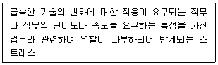
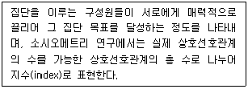
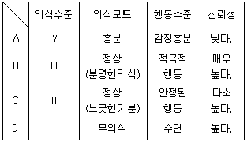
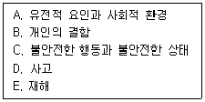
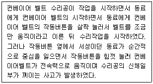
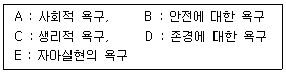
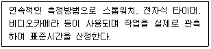

인간공학기사 (2022-03-05 기출문제)
1과목: 인간공학개론
1. 새로운 자동차의 결함원인이 엔진일 확률이 0.8, 프레임일 확률이 0.2라고 할 때 이로부터 기대할 수 있는 평균 정보량은 얼마인가?
- 0.26 bit
- 0.32 bit
- 0.72 bit
- 2.64 bit
(정답률: 53%)

2. 다음 중 시식별에 영향을 주는 정도가 가장 작은 것은?
- 시력
- 물체 크기
- 밝기
- 표적의 형태
(정답률: 75%)
3. 정보이론과 관련된 내용 중 옳지 않은 것은?
- 정보의 측정 단위는 bit를 사용한다.
- 두 대안의 실현 확률이 동일할 때 총 정보량이 가장 작다.
- 실현 가능성이 같은 N개의 대안이 있을 때, 총 정보량 H는 log2N 이다.
- 1 bit란 실현 가능성이 같은 2개의 대안 중 결정에 필요한 정보량이다.
(정답률: 58%)
4. 시력에 관한 내용으로 옳지 않은 것은?
- 눈의 조절능력이 불충분한 경우, 근시 또는 원시가 된다.
- 시력은 세부적인 내용을 시각적으로 식별할 수 있는 능력을 말한다.
- 눈이 초점을 맞출 수 없는 가장 먼 거리를 원점이라 하는데 정상 시각에서 원점은 거의 무한하다.
- 여러 유형의 시력은 주로 망막 위에 초점이 맞추어지도록 홍체의 근육에 의한 눈의 조절능력에 달려있다.
(정답률: 39%)
5. 인체 각 부위에 대한 정적인 치수를 측정하기 위한 계측장비는?
- 근전도(EMG)
- 마틴(Martin)식 측정기
- 심전도(ECG)
- 플리커(Flicker) 측정기
(정답률: 54%)
6. 인간-기계 시스템의 분류에서 인간에 의한 제어정도에 따른 분류가 아닌 것은?
- 수동 시스템
- 기계화 시스템
- 자동화 시스템
- 감시제어 시스템
(정답률: 58%)
7. 인간의 기억체계에 대한 설명으로 옳지 않은 것은?
- 감각저항은 빠르게 사라지고 새로운 자극으로 대체 된다.
- 단기기억을 장기기억으로 이전시키려면 리허설이 필요하다.
- 인간의 기억은 감각저항, 단기기억, 장기기억으로 구분된다.
- 단기기억의 정보는 일반적으로 시각, 음성, 촉각, 감각코드의 4가지로 코드화된다.
(정답률: 47%)
8. 피부 감각의 종류에 해당되지 않는 것은?
- 압력 감각
- 진동 감각
- 온도 감각
- 고통 감각
(정답률: 57%)
9. 조작자와 제어버튼 사이의 거리 또는 조작에 필요한 힘 등을 정할 때 사용되는 인체측정 자료의 응용원칙은?
- 최소치 설계
- 평균치 설계
- 조절식 설계
- 최대치 설계
(정답률: 53%)
10. 최적의 C/R비 설계 시 고려해야할 사항으로 옳지 않은 것은?
- 조종장치의 조작시간 지연은 직접적응로 C/R비와 관계없다.
- 계기의 조절시간이 가장 짧게 소요되는 크기를 선택한다.
- 작업자의 눈과 표시장치의 거리는 주행과 조절에 크게 관계된다.
- 짧은 주행시간 내에서 공차의 인정범위를 초과하지 않는 계기를 마련한다.
(정답률: 67%)
11. 동작 거리가 멀고 과녁이 작을수록 동작에 걸리는 시간이 길어짐을 나타내는 법칙은?
- Fitts 법칙
- Hick-Hyman 법칙
- Murphy 법칙
- Schmidt 법칙
(정답률: 62%)
12. 비행기에서 20m 떨어진 거리에서 측정한 엔진의 소음수준이 130dB(A)이었다면, 100m 떨어진 위치에서의 소음수준은 약 얼마인가?
- 113.5 dB(A)
- 116.0 dB(A)
- 121.8 dB(A)
- 130.0 dB(A)
(정답률: 47%)
13. 외이와 중이의 경계가 되는 것은?
- 기저막
- 고막
- 정원창
- 난원창
(정답률: 67%)
14. 양립성에 적합하게 조종장치와 표시장치를 설계할 때 얻을 수 있는 결과로 옳지 않은 것은?
- 인간실수 증가
- 반응시간의 감소
- 학습시간의 단축
- 사용자 만족도 향상
(정답률: 67%)
15. 시각적 부호의 3가지 유형과 거리가 먼 것은?
- 임의적 부호
- 묘사적 부호
- 사실적 부호
- 추상적 부호
(정답률: 39%)
16. 인간-기계 시스템에서의 기본적인 기능이 아닌 것은?
- 행동
- 정보의 수용
- 정보의 제어
- 정보처리 및 결정
(정답률: 38%)
17. 인간공학(ergonomics)의 정의와 가장 거리가 먼 것은?
- 인간이 포함된 환경에서 그 주변의 환경조건이 인간에게 맞도록 설계·재설계되는 것이다.
- 인간의 작업과 작업환경을 인간의 정신적, 신체적 능력에 적용시키는 것을 목적으로 하는 과학이다.
- 건강, 안전, 복지, 작업성과 등의 개선을 요구하는 작업, 시스템, 제품, 환경을 인간의 신체·정신적 능력과 한계에 부합시키기 위해 인간 과학으로부터 지식을 생성·통합한다.
- 인간에게 질병, 건강장해, 심각한 불쾌감 및 능률저하 등을 초래하는 작업환경 요인과 스트레스를 예측, 인식(측정), 평가, 관리(대책)하는 과학인 동시에 기술이다.
(정답률: 50%)
18. 정량적 표시장치의 지침을 설계할 경우 고려하여야 할 사항으로 옳지 않은 것은?
- 끝이 뾰족한 지침을 사용할 것
- 지침의 끝이 작은 눈금과 겹치게 할 것
- 지침의 색은 선단에서 눈금의 중심까지 칠할 것
- 지침을 눈금 면과 밀착시킬 것
(정답률: 49%)
19. 신호검출이론에 대한 설명으로 옳은 것은?
- 잡음에 실린 신호의 분포는 잡음만의 분포와 구분되지 않아야 한다.
- 신호의 유무를 판정함에 있어 반응대안은 2가지뿐이다.
- 신호에 의한 반응이 선형인 경우 판별력은 좋아진다.
- 신호검출의 민감도에서 신호와 잡음간의 두 분포가 가까울수록 판정자는 신호와 잡음을 정확하게 판별하기 쉽다.
(정답률: 46%)
20. 통계적 분석에서 사용되는 제1종 오류(α)를 설명한 것으로 옳지 않은 것은?
- 1-α를 검출력(power)이라고 한다.
- 제1종 오류를 통계적 기각역이라고도 한다.
- 발견한 결과가 우연에 의한 것일 확률을 의미한다.
- 동일한 데이터의 분석에서 제1종 오류를 작게 설정할수록 제2종 오류가 증가할 수 있다.
(정답률: 50%)
2과목: 작업생리학
21. 소리 크기의 지표로서 사용하는 단위 중 8sone 은 몇 phon인가?
- 60
- 70
- 80
- 90
(정답률: 40%)
22. 육체적 작업에서 생기는 우리 몸의 순환기 반응에 해당하지 않는 것은?
- 혈압상승
- 심박출량의 증가
- 산소소비량의 증가
- 신체에 흐르는 혈류의 재분배
(정답률: 38%)
23. 어떤 작업의 평균 에너지값이 6kcal/min 이라고 할 때 60분간 총 작업시간 내에 포함되어야 하는 휴식시간은 약 몇 분인가? (단, Murrell의 방법을 적용하여, 기초대사를 포함한 작업에 대한 권장 평균 에너지값의 상한은4kcal/min 이다.)
- 6.7
- 13.3
- 26.7
- 53.3
(정답률: 50%)
24. 신체부위를 움직이지 않으면서 고정된 물체에 힘을 가하는 상태의 근력을 의미하는 것은?
- 등장성 근력(isotonic strength)
- 등척성 근력(isometric strength)
- 등속성 근력(isokinetic strength)
- 등관성 근력(isoinerial strength)
(정답률: 60%)
25. 남성근로자의 육체작업에 대한 에너지대사량을 측정한 결과 분당 작업 시 산소 소비량이 1.2 L/min, 안정 시 산소 소비량이 0.5 L/min, 기초대사량이 1.5 kcal/min 이었다면 이 작업에 대한 에너지대사율(RMR)은 약 얼마인가? (단, 권장평균에너지소비량은 5 kcal/min 이다.)
- 0.47
- 0.80
- 1.25
- 2.33
(정답률: 29%)
26. 사무실 공기관리 지침 상 공기정화시설을 갖춘 사무실의 시간당 환기횟수 기준은?
- 1회 이상
- 2회 이상
- 3회 이상
- 4회 이상
(정답률: 57%)
27. 어떤 작업자가 팔꿈치 관절에서부터 30cm 거리에 있는 10kg 중량의 물체를 한 손으로 잡고 있으며 팔꿈치 관절의 회전중심에서의 손까지의 중력중심 거리는 14cm 이며 이 부분의 중량은 1.3kg이다. 이때 팔꿈치에 걸리는 반작용(Re)의 힘은?
- 98.2 N
- 1⑤.5 N
- 110.7 N
- 114.9 N
(정답률: 41%)
28. 작업면에 균등한 조도를 얻기 위한 조명방식으로 공장 등에서 많이 사용되는 조명방식은?
- 국소조명
- 전반조명
- 직접조명
- 간접조명
(정답률: 43%)
29. 일반적으로 소음계는 주파수에 따른 사람의 느낌을 감안하여 A, B, C 세 가지 특성에서 음압을 측정할 수 있도록 보정되어 있는데, A 특성치란 몇 phon의 등음량 곡선과 비슷하게 주파수에 따른 반응을 보정하여 측정한 음압수준을 말하는가?
- 20
- 40
- 70
- 100
(정답률: 53%)
30. 뇌간(brain stem)에 해당되지 않는 것은?
- 간뇌
- 중뇌
- 뇌교
- 연수
(정답률: 38%)
31. 음식물을 섭취하여 기계적인 일과 열로 전환하는 화학적인 과정을 무엇이라 하는가?
- 신진대사
- 에너지가
- 산소 부채
- 에너지 소비량
(정답률: 61%)
32. 정신적 작업부하를 측정하는 생리적 측정치에 해당하지 않는 것은?
- 부정맥 지수
- 산소 소비량
- 점멸융합 주파수
- 뇌파도 측정치
(정답률: 42%)
33. 최대산소소비능력(MAP)에 관한 설명으로 옳지 않은 것은?
- 산소섭취량이 일정하게 되는 수준을 말한다.
- 최대산소소비능력은 개인의 운동역량을 평가하는데 활용된다.
- 젊은 여성의 평균 MAP는 젊은 남성의 평균 MAP 의 20~20% 정도이다.
- MAP를 측정하기 위해서 주로 트레드밀(treadmill)이나 자건거 에르고미터(ergometer)를 활용한다.
(정답률: 56%)
34. 골격의 구조와 기능에 대한 설명으로 옳지 않은 것은?
- 신체에 중요한 부분을 보호하는 역할을 한다.
- 소화, 순환, 분비, 배설 등 신체 내부 환경의 조절에 중요한 역할을 한다.
- 골격은 뼈, 연골, 관절로 이루어지며 사지 및 몸통을 움직이는 피동적 운동기관으로 작용한다.
- 혈구세포를 만드는 조혈기능과 칼슘과 인 등의 무기질을 저장하여 몸이 필요할 때 공급해 주는 역할을 한다.
(정답률: 54%)
35. 척추와 근육에 대한 설명으로 옳은 것은?
- 허리부위의 미골은 체중의 60% 정도를 지탱하는 역할을 담당한다.
- 인대는 근육과 뼈에 연결되어 있는 것으로 보통 힘줄이라고 한다.
- 건은 뼈와 뼈를 연결하여 관절의 운동을 제한한다.
- 척추는 26개의 뼈로 구성되어 경추, 흉추, 요추, 천골, 미골로 구성되어 있다.
(정답률: 50%)
36. 저온환경이 작업수행에 미치는 영향으로 옳지 않은 것은?
- 근육강도와 내성이 감소하여 육체적 기능도가 줄어든다.
- 손 피부온도(HST)의 감소로 수작업 과업수행능력이 저하된다.
- 저온 환경에서는 체내 온도를 유지하기 위해 근육의 대사율이 증가된다.
- 저온은 말초운동신경의 신경전도 속도를 감소시킨다.
(정답률: 59%)
37. 다음 중 근육피로의 1차적 원인으로 옳은 것은?
- 젖산 축적
- 글리코겐 축적
- 미오신 축적
- 피루브산 축적
(정답률: 65%)
38. 산소 소비량과 에너지 대사를 설명한 것으로 옳지 않은 것은?
- 산소 소비량은 에너지 소비량과 선형적인 관계를 가진다.
- 산소 소비량이 증가한다는 것은 육체적 부하가 증가한다는 것이다.
- 에너지가의 계산에는 2kcal의 에너지 생성에 1리터의 산소가 소모되는 관계를 이용한다.
- 산소 소비량은 육체활동에 요구되는 에너지 대사량을 활동 시 소비된 산소량으로 간접적으로 측정하는 것이다.
(정답률: 49%)
39. 점광원으로부터 어떤 물체나 표면에 도달하는 빛의 밀도를 나타내는 단위로 옳은 것은?
- nit
- Lambert
- cabdela
- lumen/m2
(정답률: 54%)
40. 진동이 인체에 미치는 영향으로 옳지 않은 것은?
- 심박수 감소
- 산소소비량 증가
- 근장력 증가
- 말초혈관의 수축
(정답률: 56%)
3과목: 산업심리학 및 관계법규
41. 리더십은 교육 훈련에 의해서 향상되므로, 좋은 리더는 육성될 수 있다는 가정을 하는 리더십 이론은?
- 특성접근법
- 상황접근법
- 행동접근법
- 제한적 특질접근법
(정답률: 49%)
42. R. House의 경로-목표이론(path-goal theory) 중 리더 행동에 따른 4가지 범주에 해당하지 않는 것은?
- 방임적 리더
- 지시적 리더
- 후원적 리더
- 참여적 리더
(정답률: 48%)
43. 부주의에 대한 사고방지대책 중 정신적 측면의 대책으로 볼 수 없는 것은?
- 안전의식의 제고
- 작업의욕의 고취
- 작업조건의 개선
- 주의력 집중 훈련
(정답률: 56%)
44. 집단행동에 있어 이성적 판단보다는 감정에 의해 좌우되며 공격적이라는 특징을 갖는 행동은?
- crowd
- mob
- panic
- fashion
(정답률: 55%)
45. 제조물 책임법에서 정의한 결함의 종류에 해당하지 않는 것은?
- 제조상의 결함
- 기능상의 결함
- 설계상의 결함
- 표시상의 결함
(정답률: 44%)
46. 인간 오류에 관한 일반 설계기법 중 오류를 범할 수 없도록 사물을 설계하는 기법은?
- Fail-Safe 설계
- Interlock 설계
- Exclusion 설계
- Prevention 설계
(정답률: 45%)
47. 집단을 공식집단과 비공식집단으로 구분할 때 비공식집단의 특성이 아닌 것은?
- 규모가 크다.
- 동료애의 욕구가 강하다.
- 개인적 접촉의 기회가 많다.
- 감정의 논리에 따라 운영된다.
(정답률: 60%)
48. 작업자가 제어반의 압력계를 계속적으로 모니터링 하는 작업에서 압력계를 잘못 읽어 에러를 범할 확률이 100시간에 1회로 일정한 것으로 조사되었다. 작업을 시작한 후 200시간 시점에서의 인간신뢰도는 약 얼마로 추정되는가?
- 0.02
- 0.98
- 0.135
- 0.865
(정답률: 24%)
49. 미국 국립산업안전보건연구원(NIOSH)에서 제안한 직무 스트레스 요인에 해당하지 않는 것은?
- 성능 요인
- 환경 요인
- 작업 요인
- 조직 요인
(정답률: 57%)
50. 다음 조직에 의한 스트레스 요인은?

- 역할 갈등
- 과업 요구
- 집단 압력
- 역할 모호성
(정답률: 57%)
51. 반응시간(reaction time)에 관한 설명으로 옳은 것은?
- 자극이 요구하는 반응을 행하는 데 걸리는 시간을 의미한다.
- 반응해야 할 신호가 발생한 때부터 반응이 종료될 때까지의 시간을 의미한다.
- 단순반응시간에 영향을 미치는 변수로는 자극 양식, 자극의 특성, 자극 위치, 연령 등이 있다.
- 여러 개의 자극을 제시하고, 각각에 대한 서로 다른 반응을 할 과제를 준 후에 자극이 제시되어 반응할 때까지의 시간을 단순반응시간이라 한다.
(정답률: 34%)
52. 재해의 발생원인 중 직접원인(1차원인)에 해당하는 것은?
- 기술적 원인
- 교육적 원인
- 관리적 원인
- 물적 원인
(정답률: 53%)
53. 다음에서 설명하는 것은?

- 집단 협력성
- 집단 단결성
- 집단 응집성
- 집단 목표성
(정답률: 58%)
54. A사업장의 도수율이 2로 산출되었을 때, 그 결과에 대한 해석으로 옳은 것은?
- 근로자 1000명당 1년 동안 발생한 재해자수가 2명이다.
- 연근로시간 1000시간당 발생한 근로손실일수가 2일이다.
- 근로자 10000명당 1년간 발생한 사망자수가 2명이다.
- 연근로자가 1000000시간당 발생한 재해건수가 2건이다.
(정답률: 56%)
55. 원자력발전소 주제어실의 직무는 4명의 운전원으로 구성된 근무조에 의해 수행되고, 이들의 직무간에는 서로 영향을 끼치게 된다. 근무조원 중 1차 계통의 운전원 A와 2차 계통의 운전원 B간의 직무는 중간 정도의 의존성(15%)이 있다. 그리고 운전원 A의 기초 인간실수확률 HEP Prob{A} = 0.001 일 때, 운전원 B의 직무실패를 조건으로 한 운전원 A의 직무실패확률은 약 얼마인가? (단, THERP 분석법을 사용한다.)
- 0.151
- 0.161
- 0.171
- 0.181
(정답률: 22%)
56. 다음 중 상해의 종류에 해당하지 않는 것은?
- 협착
- 골절
- 부종
- 중독·질식
(정답률: 56%)
57. 인간의 의식수준과 주의력에 대한 다음의 관계가 옳지 않은 것은?

- A
- B
- C
- D
(정답률: 60%)
58. 하인리히의 도미노 이론을 순서대로 나열한 것은?

- A→B→D→C→E
- A→B→C→D→E
- B→A→C→D→E
- B→A→D→C→E
(정답률: 47%)
59. 다음은 인적 오류가 발생한 사례이다. Swain과 Guttman이 사용한 개별적 독립행동에 의한 오류 중 어느 것에 해당하는가?

- 시간 오류(timing error)
- 순서 오류(sequence error)
- 부작위 오류(omission error)
- 작위 오류(commission error)
(정답률: 47%)
60. Maslow의 욕구단계 이론을 하위단계부터 상위단계로 올바르게 나열한 것은?

- C→A→B→E→D
- C→A→B→D→E
- C→B→A→E→D
- C→B→A→D→E
(정답률: 55%)
4과목: 근골격계질환 예방을 위한 작업관리
61. 작업관리의 문제해결 방법으로 전문가 집단의 의견과 판단을 추출하고 종합하여 집단적으로 판단하는 방법은?
- SEARCH의 원칙
- 브레인스토밍(Brainstorming)
- 마인드 맵핑(Mind Mapping)
- 델파이 기법(Delphi Technique)
(정답률: 50%)
62. 시설배치방법 중 공정별 배치방법의 장점에 해당하는 것은?
- 운반 길이가 짧아진다.
- 작업진도의 파악이 용이하다.
- 전문적인 작업지도가 용이하다.
- 재공품이 적고, 생산길이가 짧아진다.
(정답률: 50%)
63. 동작경제의 원칙 중 작업장 배치에 관한 원칙으로 볼 수 없는 것은?
- 모든 공구나 재료는 지정된 위치에 있도록 한다.
- 공구의 기능을 결합하여 사용하도록 한다.
- 가능하다면 낙하식 운반 방법을 이용한다.
- 작업이 용이하도록 적절한 조명을 비추어 준다.
(정답률: 37%)
64. 다음 중 허리부위나 중량물취급 작업에 대한 유해요인의 주요 평가기법은?
- REBA
- JSI
- RULA
- NLE
(정답률: 44%)
65. NIOSH Lifting Equation 평가에서 권장무게한계가 20kg이고, 현재 작업물의 무게가 23kg일 때, 들기 지수(Lifting Index)의 값과 이에 대한 평가가 옳은 것은?
- 0.87, 요통의 발생위험이 높다.
- 0.87, 작업을 재설계할 필요가 있다.
- 1.15, 요통의 발생위험이 높다.
- 1.15, 작업을 재설계할 필요가 없다.
(정답률: 59%)
66. 다중활동분석표의 사용 목적과 가장 거리가 먼 것은?
- 작업자의 작업시간 단축
- 기계 혹은 작업자의 유휴시간 단축
- 조 작업을 재편성 또는 개선하여 조 작업 효율 향상
- 한 명의 작업자가 담당할 수 있는 기계 대수의 산정
(정답률: 29%)
67. 작업관리에서 사용되는 한국산업표준 공정도시 기호와 명칭이 잘못 연결된 것은?
- ▽ - 이동
- ○ - 운반
- □ - 수량 검사
- ◇ - 품질 검사
(정답률: 42%)
68. 작업관리에서 사용되는 기본 문제해결 절차로 가장 적합한 것은?
- 연구대상선정 → 분석과 기록 → 분석 자료의 검토 → 개선안의 수립 → 개선안의 도입
- 연구대상선정 → 분석 자료의 검토 → 분석과 기록 → 개선안의 수립 → 개선안의 도입
- 분석 자료의 검토 → 분석과 기록 → 개선안의 수립 → 연구대상선정 → 개선안의 도입
- 분석 자료의 검토 → 개선안의 수립 → 분석과 기록 → 연구대상선정 → 개선안의 도입
(정답률: 45%)
69. 다음의 특징을 가지는 표준시간 측정법은?

- PTS법
- 시간연구법
- 표준자료법
- 워크 샘플링
(정답률: 47%)
70. 문제분석을 위한 기법 중 원과 직선을 이용하여 아이디어 문제, 개념 등을 개괄적으로 빠르게 설정할 수 있도록 도와주는 연역적 추론 기법에 해당하는 것은?
- 공정도(proces chart)
- 마인드 맵핑(mind mapping)
- 파레토 차트(Pareto chart)
- 특성요인도(cause and effet diagram)
(정답률: 44%)
71. 작업연구의 내용과 가장 관계가 먼 것은?
- 표준 시간을 산정, 결정한다.
- 최선의 작업방법을 개발하고 표준화한다.
- 최적 작업방법에 의한 작업자 훈련을 한다.
- 작업에 필요한 경제적 로트(lot) 크기를 결정한다.
(정답률: 45%)
72. 워크샘플링 조사에서 주요작업의 추정비율(p)이 0.06이라면, 99% 신뢰도를 위한 워크샘플링 횟수는 몇 회인가? (단, μ0.0⑤는 2.58, 허용오차는 0.01 이다.)
- 3744
- 3745
- 3755
- 3764
(정답률: 39%)
73. 근골격계질환의 유형에 대한 설명으로 옳지 않은 것은?
- 외상 과염은 팔꿈치 부위의 인대에 염증이 생김으로써 발생하는 증상이다.
- 수근관 증후군은 손목이 꺾인 상태나 과도한 힘을 준 상태에서 반복적 손 운동을 할 때 발생한다.
- 회내근 증후군은 과도한 망치질, 노젓기 동작 등으로 손가락이 저리고 손가락 굴곡이 약화되는 증상이다.
- 결절종은 반복, 구부림, 진동 등에 의하여 건의 섬유질이 손상되거나 찢어지는 등의 건에 염증이 생기는 질환이다.
(정답률: 44%)
74. 3시간 동안 작업 수행과정을 촬영하여 워크샘플링 방법으로 200회를 샘플링한 결과 30번의 손목꺽임이 확인되었다. 이 작업의 시간당 손목꺽임 시간은?
- 6분
- 9분
- 18분
- 30분
(정답률: 49%)
75. 동작분석을 할 때 스패너에 손을 뻗치는 동작의 적합한 서블릭(Therblig) 문자기호는?
- H
- P
- TE
- SH
(정답률: 55%)
76. 작업수행도 평가 시 사용되는 레이팅 계수(rating scale)에 대한 설명으로 옳지 않은 것은?
- 관측시간치의 평균값을 레이팅 계수로 보정하여 보통속도로 변환시켜준 개념을 표준시간이라 한다.
- 정상기준 작업속도를 100%로 보고 100%보다 큰 경우 표준보다 빠르고, 100%보다 작은 경우 느린 것을 의미한다.
- 레이팅 계수(%)가 125일 경우 동작이 매우 숙달된 속도, 장시간 계속 작업 시 피로할 것 같은 작업속도로 판정할 수 있다.
- 속도 평가법에서의 레이팅 계수는 기준속도를 실제속도로 나누어 계산하고 레이팅 시 작업속도만을 고려하므로 적용하기가 쉬워 보편적으로 사용한다.
(정답률: 17%)
77. 근골격계질환·관리추진팀 내 보건관리자의 역할로 옳지 않은 것은?
- 근골격계질환 예방·관리프로그램의 기본정책을 수립하여 근로자에게 알린다.
- 주기적으로 작업장을 순회하여 근골격계질환을 유발하는 작업공정 및 작업 유해요인을 파악한다.
- 7일 이상 지속되는 증상을 가진 근로자가 있을 경우 지속적인 관찰, 전문의 진단의뢰 등의 필요한 조치를 한다.
- 주기적인 근로자 면담 등을 통하여 근골격계질환 증상 호소자를 조기에 발견하는 일을 한다.
(정답률: 48%)
78. 표준자료법의 특징으로 옳은 것은?
- 레이팅이 필요하다.
- 표준시간의 정도가 뛰어나다.
- 직접적인 표준자료 구축 비용이 크다.
- 작업방법의 변경 시 표준시간을 설정할 수 있다.
(정답률: 41%)
79. 산업안전보건법령상 근골격계부담작업에 해당하지 않는 것은? (단, 단기간작업 또는 간헐적인 작업은 제외한다.)
- 하루에 10회 이상 25kg 이상의 물체를 드는 작업
- 하루에 총 2시간 이상, 분당 2회 이상 4.5kg 이상의 물체를 드는 작업
- 하루에 총 1시간 이상 쪼그리고 앉거나 무릎을 굽힌 자세에서 이루어지는 작업
- 하루에 4시간 이상 집중적으로 자료입력 등을 위해 키보드 또는 마우스를 조작하는 작업
(정답률: 49%)
80. 근골격계질환 예방대책으로 옳지 않은 것은?
- 단순 반복 작업은 기계를 사용한다.
- 작업순환(Job Rotation)을 실시한다.
- 작업방법과 작업공간을 인간공학적으로 설계한다.
- 작업속도와 작업강도를 점진적으로 강화한다.
(정답률: 64%)